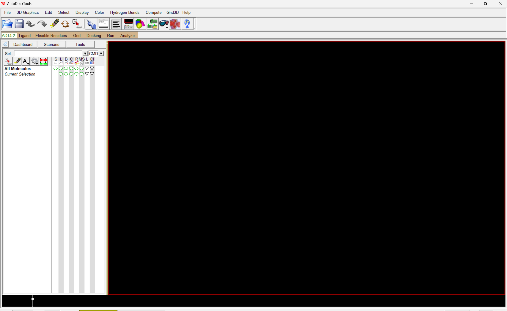
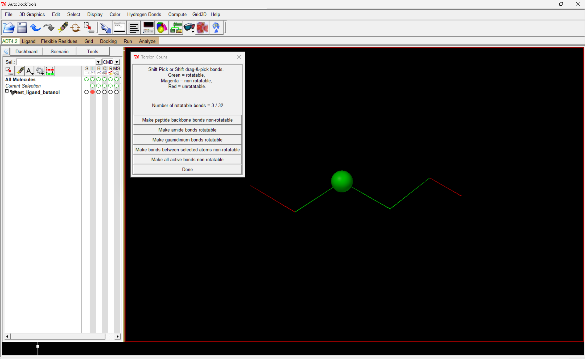
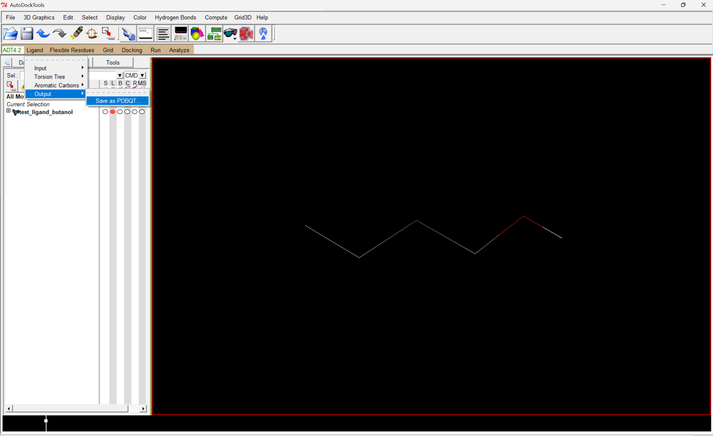
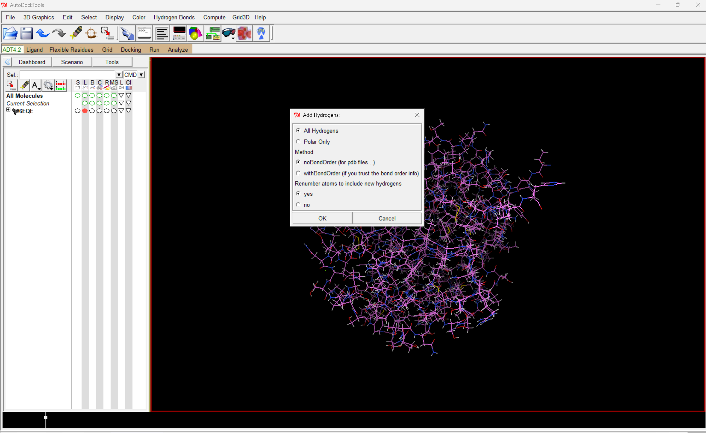
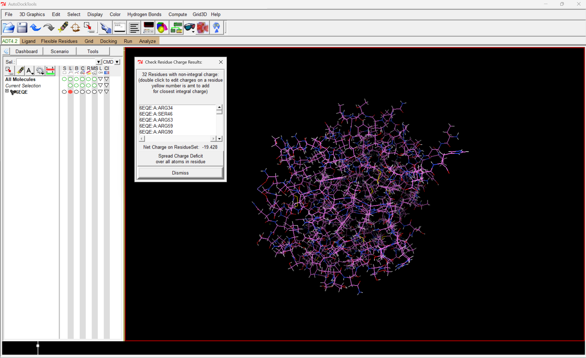
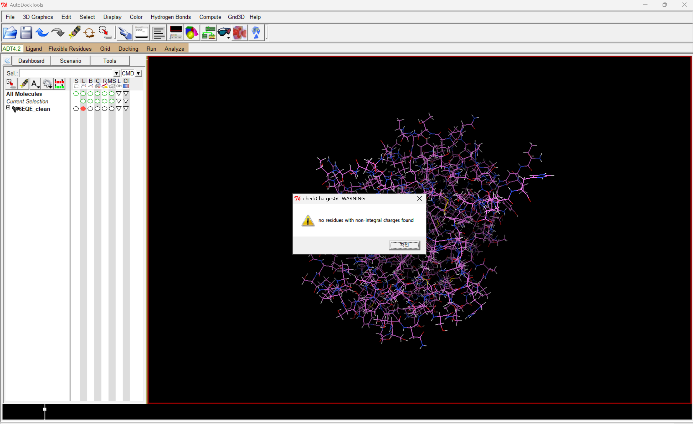
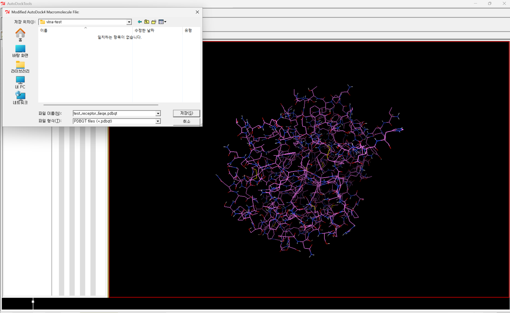
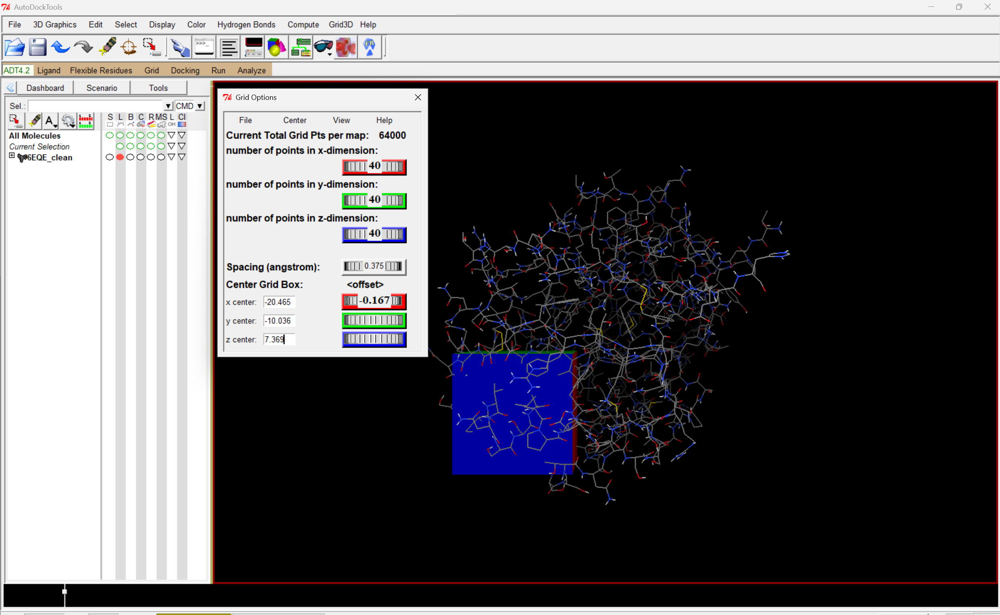
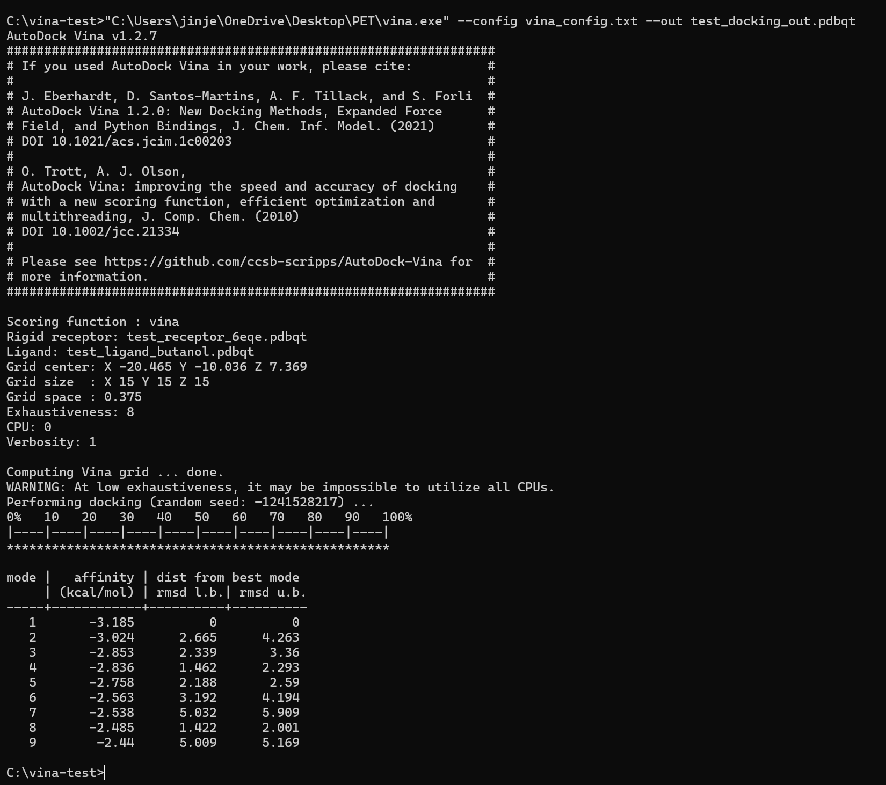

AutoDock Vina + ADT
Receptor와 ligand를 준비하고 가능한 결합 pose를 탐색하는 molecular docking workflow입니다.
Overview → Quick Start → Common Problems 순서로 먼저 읽어도 됩니다.
Overview
AutoDockTools는 docking 입력 구조를 준비하고, AutoDock Vina는 준비된 receptor와 ligand를 이용해 가능한 결합 pose를 탐색합니다. 결과는 PyMOL 등에서 분석할 수 있습니다.

Docking 기본 용어
| 용어 | 의미 |
|---|---|
| Receptor | Ligand가 결합할 대상 구조 |
| Ligand | Docking할 상대적으로 작은 분자 |
| Pose | 예측된 ligand의 위치·방향·conformation |
| Search Space | Ligand가 탐색할 3D 영역 |
| Affinity | Vina scoring function이 pose를 평가한 값 |
Vina affinity는 실험에서 직접 측정한 결합 자유에너지와 동일하지 않습니다. 같은 조건의 pose를 비교하는 scoring 값으로 이해하는 것이 안전합니다.
Version Note
이 가이드는 MGLTools / AutoDockTools 1.5.7의 GUI workflow를 실제로 검증한 내용을 기반으로 합니다. 최신 AutoDock Vina 생태계에서는 Meeko 기반 preparation도 널리 사용됩니다.
Ligand Preparation
작은 분자를 docking용 ligand PDBQT로 준비합니다.
File → Read Molecule로 구조를 불러옵니다.Edit → Charges → Compute Gasteiger로 charge를 계산합니다.- 필요한 hydrogen 상태를 확인하고 non-polar hydrogen을 병합합니다.
Ligand → Input → Choose...로 ligand를 지정합니다.Detect Root와Choose Torsions...에서 rotatable bond를 확인합니다.Save as PDBQT...로 저장합니다.


Hydrogen은 많고 적음보다 실제 protonation state가 중요합니다. 입력 구조의 화학적 상태를 먼저 확인하세요.
Receptor Preparation
PDB 구조에는 water, ion, alternate conformer, cofactor 등이 포함될 수 있습니다. Docking 목적에 따라 필요한 요소를 판단한 뒤 receptor를 준비합니다.

ADT 1.5.7 기반 legacy workflow에서는 receptor에 Kollman charge를 할당하고 residue charge를 확인할 수 있습니다.


Water, ion, cofactor를 항상 삭제하는 규칙은 없습니다. 활성 부위 금속이나 구조적으로 중요한 물처럼 유지해야 하는 요소도 있습니다.

Search Space
Ligand가 탐색할 영역을 중심 좌표와 크기로 지정합니다. 알려진 binding site나 active-site residue가 있다면 그 영역을 포함하도록 설정합니다.

ADT의 grid point 수와 Vina의 size_x/y/z는 같은 값이 아닙니다. Vina의 size는 Å 단위의 물리적 크기입니다.
Running Vina
receptor = receptor.pdbqt
ligand = ligand.pdbqt
center_x = 0
center_y = 0
center_z = 0
size_x = 15
size_y = 15
size_z = 15
exhaustiveness = 8
num_modes = 9vina --config vina_config.txt --out docking_out.pdbqt
Reading Results
| 항목 | 의미 |
|---|---|
| Mode | 예측된 ligand pose 번호 |
| Affinity | Vina scoring 값 |
| RMSD l.b./u.b. | best mode와 다른 pose 사이 구조 차이의 lower/upper bound |
Vina 결과표의 RMSD는 실험 구조와 계산 구조를 비교한 redocking RMSD와는 다른 값입니다.
PyMOL로 연결
Vina output은 여러 pose를 하나의 multi-model PDBQT에 담을 수 있습니다. PyMOL에서 pose가 기대한 방식으로 분리되지 않는다면 vina_split으로 개별 PDBQT를 만들 수 있습니다.
vina_split --input docking_out.pdbqtQuick Start
- Ligand를 PDBQT로 준비합니다.
- Receptor를 PDBQT로 준비합니다.
- Search space의 center와 size를 정합니다.
config.txt를 작성합니다.- Vina를 실행해 mode/affinity 표와 output PDBQT를 확인합니다.
mode / affinity 표가 출력되고 지정한 output.pdbqt 파일이 생성됩니다.
Common Problems
Vina 명령을 찾지 못해요
PATH에 없다면 vina.exe 전체 경로를 사용합니다.
Ligand PDBQT를 읽지 못해요
실제 파일인지, 현재 작업 폴더에 있는지, .pdbqt.txt 또는 .lnk가 아닌지 확인합니다.
Receptor charge 경고가 많아요
강제로 보정하기 전에 alternate conformer, water/ion, missing atom, non-standard residue 등 입력 구조를 먼저 점검하세요.
CPU warning이 떠요
낮은 exhaustiveness에서 모든 CPU를 활용하기 어렵다는 성능 안내일 수 있으며 계산 실패를 의미하지는 않습니다.
Quick Reference
| 항목 | 의미 |
|---|---|
| center_x/y/z | Search space 중심 |
| size_x/y/z | Search space 크기(Å) |
| exhaustiveness | 탐색량 |
| num_modes | 최대 출력 pose 수 |
| --config | Configuration 파일 사용 |
| --out | 결과 PDBQT 지정 |